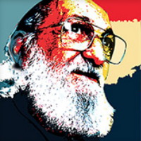

<div class="container" id="sobre">

    <div class="row mt-5 mb-5">

        <div class="col-md-8 p-15" style="font-size: 16px;">

            <h1>Sobre nós</h1>

            <p>
                A cativa é um projeto de educação complementar que visa contribuir com a democratização e melhoria no
                ensino
                brasileiro, com o intuito de agregar na educação infantil e juvenil, e na amplitude da alfabetização
                de
                jovens
                e adultos. Contamos com a contribuição de parceiros e voluntários que atuam na área da pedagogia, para
                juntos
                fazermos uma educação de qualidade para todos!
            </p>


            <h2>Contra o analfabetismo</h2>

            <p>
                No Brasil, em 1960, Paulo Freire desenvolveu a metodologia de alfabetização que realizou, entre
                outros
                feitos, a
                possibilidade de alfabetizar 300 cortadores de cana no Rio Grande do Norte, em apenas 45 dias. Paulo
                Freire
                ficou conhecido, assim, pelo método de alfabetização para adultos que leva seu nome. Dessa forma, o
                pensamento
                pedagógico do educador sempre se assumiu como político, uma vez que seus estudos se concentravam nas
                classes
                sociais menos favorecidas e que, na época, não eram totalmente atendidas pelas escolas públicas.
            </p>

            <p>
                A metodologia de Paulo Freire consiste em uma maneira de educar conectada ao cotidiano dos
                estudantes e
                às
                experiências que eles têm — e por isso, também ligado à política, especialmente porque Freire
                trabalhou
                com
                a
                alfabetização de adultos.
            </p>
           
            <a href="https://www.geledes.org.br/metodo-paulo-freire-de-alfabetizacao-as-lembrancas-emocionadas-da-1-turma/?gclid=Cj0KCQiAraSPBhDuARIsAM3Js4oez1ga60wB4NNfbH1GsPXpivZgK_aYDuqF1YoNvGUeq_wAJ97zPi4aAo7SEALw_wcB" target="_blank">saiba mais sobre o método</a>

            <li><a href="/time">Desenvolvedores</a></li>

        </div>


        <div class="col-md-4">
            <div class="card" style="width: 18rem;">
                
                <div class="card-body">
                    <p class="card-text">“Educação não transforma o mundo. Educação muda as pessoas. Pessoas
                        transformam
                        o mundo”</p>
                </div>
            </div>

        </div>

    </div>

</div>